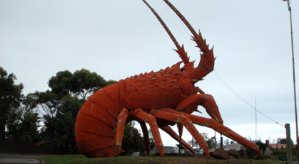
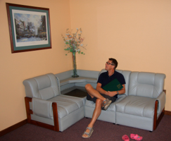

On the road again - Great Ocean Road

Voldsomt vejr og mintgrønt læder
fredag den 21. december 2007

I Adelaide har vi haft et par dage med strandbesøg, afslapning og juleindkøb. Nu er vi på vej til Melbourne i lejet bil.

Vejret her på den sydlige del af jordkloden, er ikke for småbørn. Peter Tannev ville dø af ophidselse over de daglige vejrudsigter, der lystigt sprøjter cyklon og oversvømmelsesvarsler ud, dag efter dag. Lige nu sidder vi som sagt i et voldsomt regnvejr, der oversvømmer dele af Sydaustralien, og i går kunne vi så se, at New Zealand er ramt af det kraftigste jordskælv i øens historie, men som den smilende tv vært sagde, så var der endnu ingen tsunami varsel. At vejrudsigten på dansk tv kan strækkes til at vare 10 minutter med vores ret kedelige vejr, virker helt underligt her, hvor der hele tiden kører dommedagsagtigevejrvarsler under TV programmerne.
I morgen vil vi besøge Blue Lake, en krater sø i en gammel vulkan her i området, og derefter bevæge os mod Great Ocean Road.
Vi håber, at kunne lave en lille julehilsen til jer alle. PS. den skulle være optaget på stranden med nissehuer på, men der kommer hele tiden regn på linsen.
/Camilla
De er rigtig gode til hummere her i området, og de er store, kæmpestore. Vi har dog endnu ikke haft lejlighed til at smage på herlighederne, men måske i morgen ...